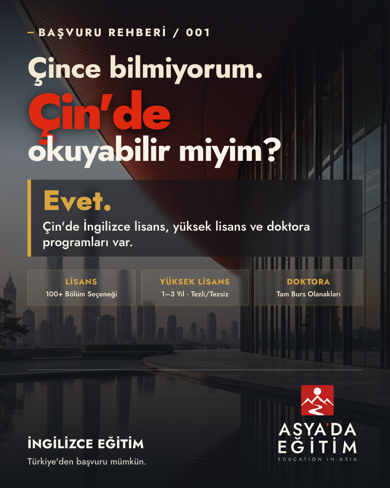
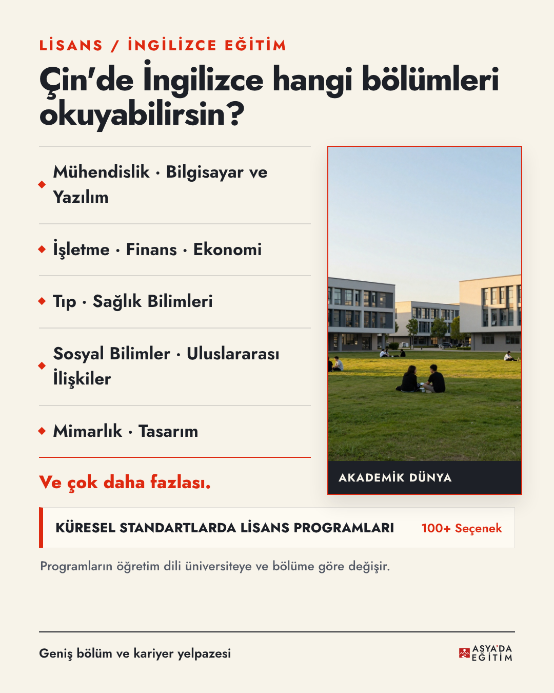
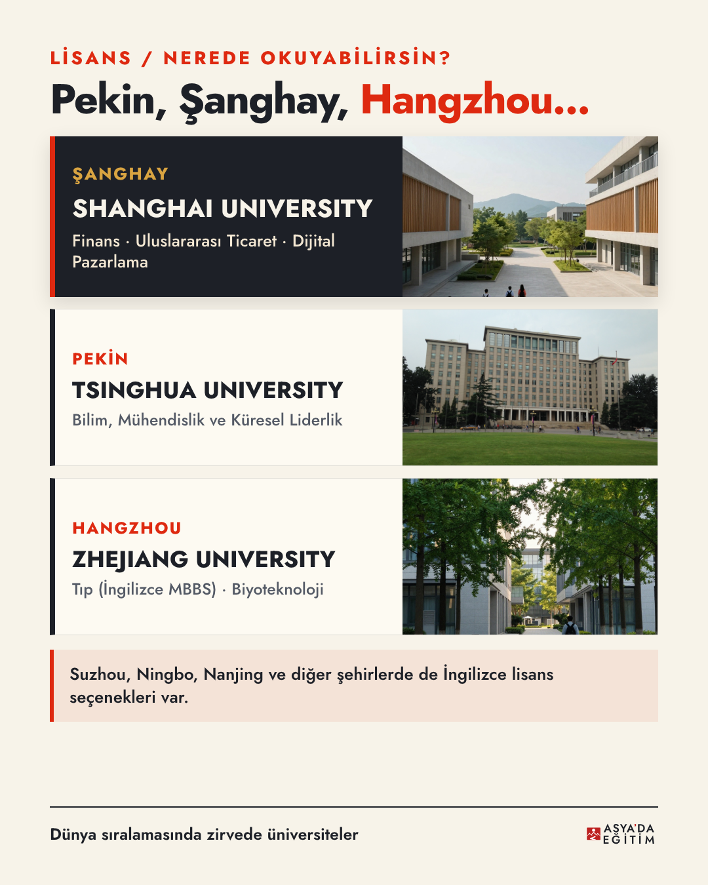
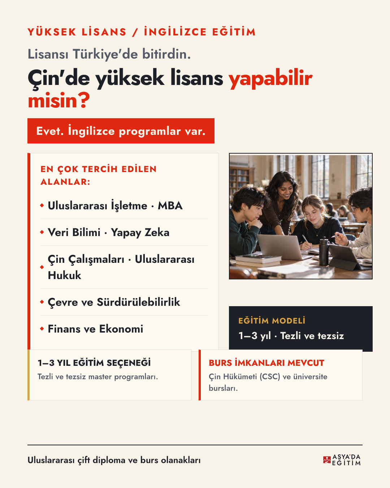
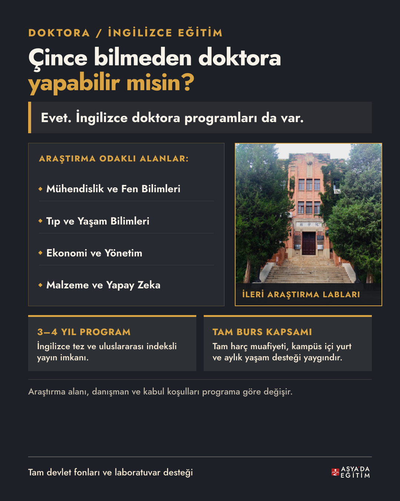
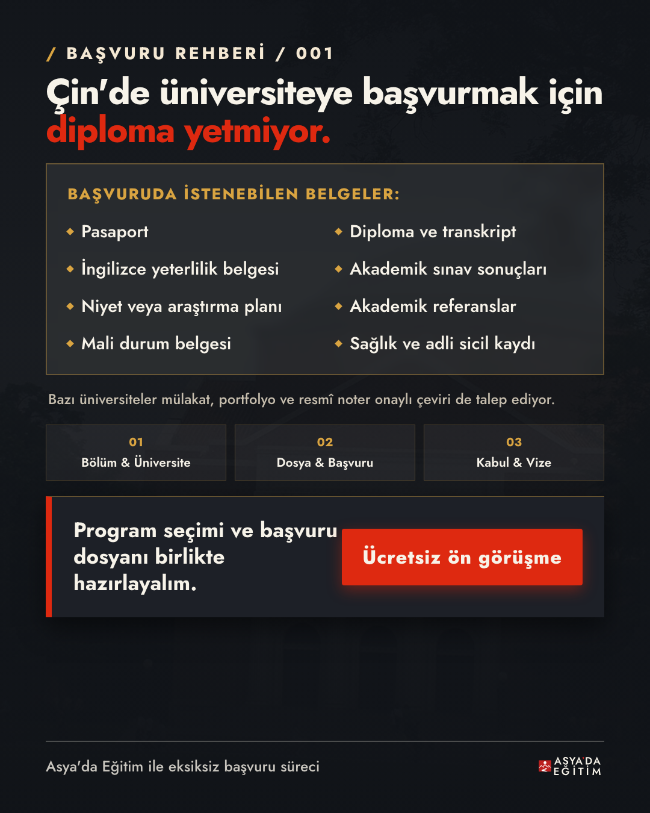

01 · Sinematik Kapak: Çin'de Okuyabilir Miyim?
1080 × 1350 PNG · Kaynak HTML/CSS
ASYA’DA EĞİTİM · INSTAGRAM REHBERİ · İNCELEME GALERİSİ
Altı slaytlık 1080 × 1350 Instagram karuseli: "Çince bilmiyorum. Çin'de okuyabilir miyim?". Kilitli editoryal metin, Çin mimari ve renk dili, doğrulanmış üniversite fotoğrafları ve onaylı kanonik marka sistemi.

1080 × 1350 PNG · Kaynak HTML/CSS

1080 × 1350 PNG · Kaynak HTML/CSS

1080 × 1350 PNG · Kaynak HTML/CSS

1080 × 1350 PNG · Kaynak HTML/CSS

1080 × 1350 PNG · Kaynak HTML/CSS

1080 × 1350 PNG · Kaynak HTML/CSS
Marka Kimliği: Asya'da Eğitim kanonik V-01 mührü ve onaylı SVG kilitleri korundu. Kapakta P-01/dark, ara slaytlarda güvenli alana uyumlu D-04/light ve D-04/dark dijital lockup kullanıldı.
Çin Renk Sistemi: Marka Kırmızısı (#BD2120), Çin Kırmızısı (#DE2910), İmparatorluk Altını (#D9A441), Mürekkep (#1D2027) ve Sıcak Kâğıt (#F7F3E9) tonları dengeli bir hiyerarşiyle uygulandı.
Doğrulanmış Varlıklar: Tsinghua Üniversitesi Ana Binası ve İleri Araştırma Laboratuvarı gibi gerçek mimari referanslar bağlandı; yapay zeka halüsinasyonu görsel kesinlikle yer almaz.
| Format | 1080 × 1350 PNG, 4:5, sRGB |
|---|---|
| Tipografi | Jost (Gerçek Değişken Font, 100-900) |
| Logo Kilitleri | P-01 (Kapak) · D-04 (İç Slaytlar) |
| Metin Bütünlüğü | Kilitli metin birebir korundu, tekrar eden ibareler temizlendi |
| Render Motoru | Yerel Chromium Headless CLI + Pillow Grid |
| Üretim Hızı | ~8.3 saniye (sıfır dış API maliyeti) |